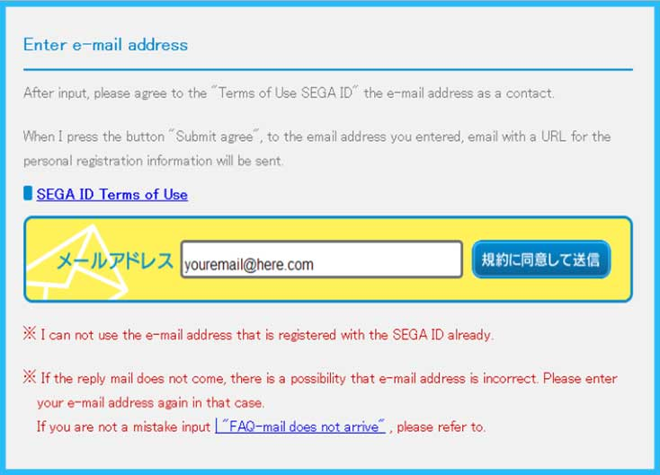
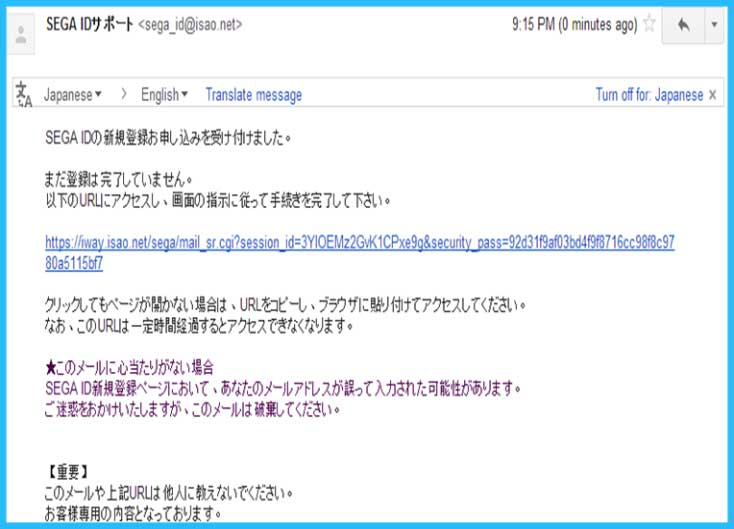
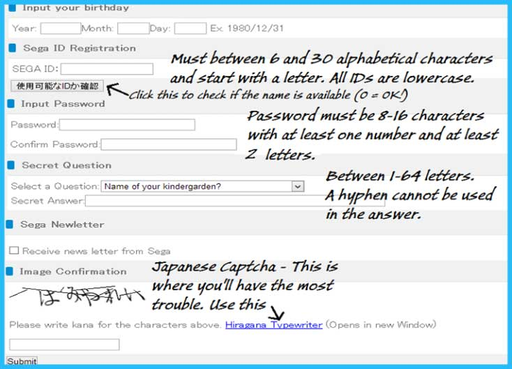
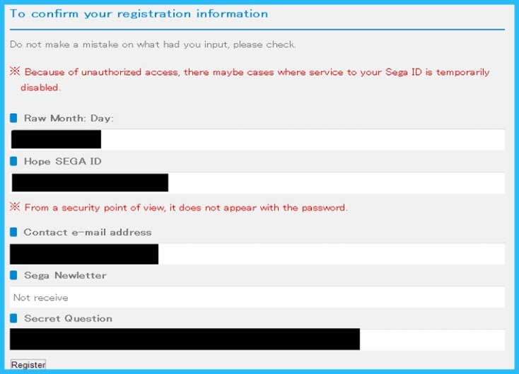
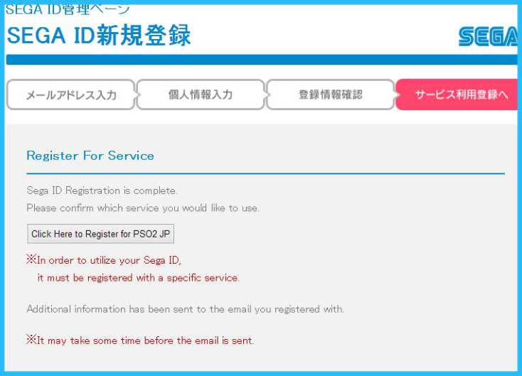
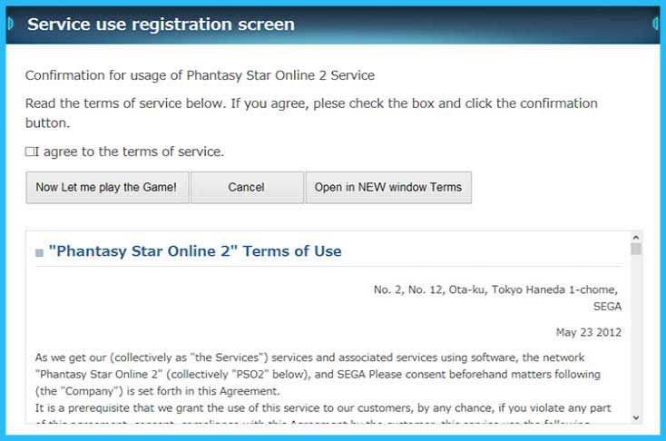

Before you begin it is highly recommended to install a language translation Addon or Extension for your web browser. This will make the registration process much easier.
1. Start by going to the Sega Registration Page. Put your e-mail in the text box and click the blue button to the right of the text box. Your browser should then take you to a page in Japanese which says "An e-mail has been sent your e-mail address. Please click the link to continue the signup process."

You should receive an email from Sega that looks like this. You need to verify your email by clicking on the link in the email.

2. After clicking on the link in the auto-generated email from Sega you will be directed to a form that requires you fill out the information needed to create an account. If you have a language translation Addon or Extension for your web browser it should be in English. The picture below also clarifies what information is required for a Sega account.

3. At the end of the account creation form you will have to pass a Japanese Captcha. This is one of the trickier parts on the journey to playing Phantasy Star Online 2. I have created several accounts for friends and have never been successful with this on the first try. There are a couple resources that are helpful when attempting to pass the Japanese Captcha; Learn Japanese Lessons Hiragana alphabet and Google Translate. Either way I suggest you copy/paste the Japanese Characters into a separate document such as Notes for Mac or Notepad for PC. Once you have all five characters copy/paste all characters into the Captcha field. Take note that the captcha has not only be the correct characters, but completed in a certain amount of time ot you may get an error for taking to long
If and when you are successful you will be directed to a page that loos like the image below.

4. Once you click "register" you will be directed to another page that will look like the image below. This Page may be subject to some change. Just click the only button on the page. The button will say something about Phantasy Star Online.

Once you have done that you will be taken to a screen that looks like the image below. You will want to click the box so that it is checked, agreeing to the Terms of Use and then click the button just underneath the checked box all the way to the left.

The next page will say: "『ファンタシースターオンライン２』を開始する準備が整いました。
ゲームを起動してログイン画面に進んで下さい。
PC版クライアントをダウンロードする場合はこちらへお進み下さい。"
Ready to start the "Phantasy Star Online 2" is now ready.
Proceed to the login screen to launch the game.
Please proceed to this place if you want to download the PC or PS4 version.
This means you're fully registered and ready to play!